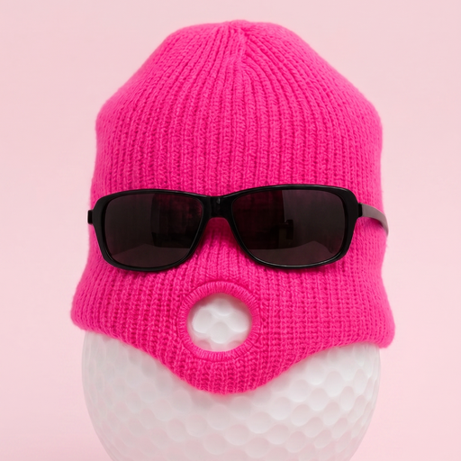

WEEKLY SERIES · 매주 저녁 8시 공개골프를 바꾼 핵심 연구 18선
매주 한 편씩
골프는 18홀, 그래서 핵심 연구도 18선. 매주 한 편씩 카드·근거·딥다이브를 이 페이지 안에서 그대로 읽습니다. 공개된 편만 열립니다.
— / 18 공개
이번 주 공개
V1 카드스와이프 요약
V2 근거전문가 자료집
V3 딥다이브논문 해부
이 페이지 안에서 세 가지 버전을 모두 볼 수 있어요. 위 탭으로 전환하세요.
전체 회차
 @mummys_hand_golf
@mummys_hand_golf
매주 저녁 8시(KST) 한 편씩 공개됩니다. 아직 공개되지 않은 편은 이 페이지에 담기지 않아, 미리 볼 수 없습니다. 인용 순서는 대략적 영향력 기준.